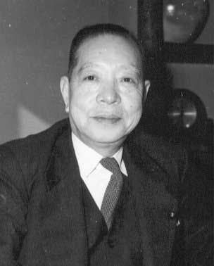
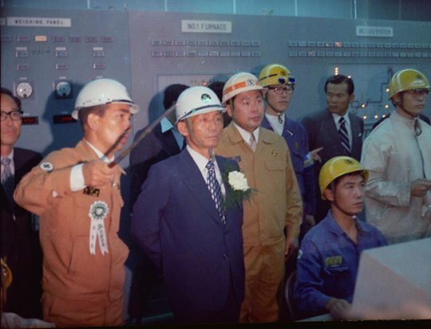
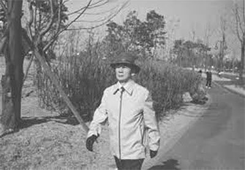

연재일 2014-09-26출처 조선일보 프리미엄조선 연재
“박태준이 왔습니다.”
그러나 박정희는 들은 체도 하지 않았다. 박태준이 한 번 더 고했다. 그래도 서재에 서 있는 박정희는 책을 찾는 시늉만 하고 있었다. 박태준이 스스로 찾아온 것이 아니었다. 1964년 1월 1일, 이 설날에 비서실장 이후락을 통해 청와대로 저녁 먹으러 오라는 초대의 전언을 보내고 대문 앞으로 지프까지 보내준 장본인이 바로 청와대의 새 주인이었다.
“박태준이 왔습니다.”
멋쩍었으나 박태준은 세 번째로 고했다. 그제야 박정희가 홱 고개를 돌렸다.
“자네는 나한테 무슨 불만이야?”
박정희가 다가서며 호되게 다그쳐 물었다. 박태준은 눈동자만 한 번 껌벅였다.
“왜 떠나겠다고 고집을 부리는 거야?”
“지난번에 말씀 드린 그대롭니다. 머리를 더 채워서 오겠습니다.”
“그래? 밥 먹자고 불렀으니 배부터 채우자.”
박정희가 그의 앞을 지나쳤다. 박태준의 느낌에 찬바람이 이는 것 같지는 않았다. 현관에서 기다리고 있던 경호실장 박종규가 집무실이 아닌 2층 사택으로 안내할 때부터 그는 오늘이 작별인사 올리기에 딱 좋겠다는 판단을 했었다.
박태준이 대통령 내외께 세배를 올렸다. 이내 술상이 나왔다.
“요즘도 많이 드세요?”
청와대 안주인이 눈을 곱게 홀기며 손수 첫 잔을 따라줬다.
“마셔야 할 때는 사양하지 않습니다.”
특히 부산 시절의 통음들을 떠올린 박태준의 답을 박정희가 받았다.
“그거 잘됐네. 오늘 마셔보자.”
저마다 한마디씩 하는 사이에 분위기는 부드러워졌다.
따끈한 정종 한 주전자를 거의 비운 다음이었다. 박정희가 편지 한 통을 내밀었다.
“이거 읽어봐.”
붓글씨로 쓴 일본어 편지. 그것은 일본 자민당 부총재 오노 반보쿠(大野伴睦)의 친필이었다. 요점은 명확했다. 한국의 현 정세로 볼 때 가장 시급한 일은 한일국교정상화를 이루고 대일청구권 자금을 받아 경제개발5개년계획에 활용해야 한다는 것. 현재 한국의 신용으로서는 외국은행이나 국제금융기구로부터 차관을 얻기 어려울 것이란 예측도 담고 있었다.
박태준의 눈에도 오노의 논리나 주장은 옳아 보였다. 경제개발을 강력히 추진하겠다는 대통령의 의지와 국민의 여망은 있어도 그것을 밀고 나갈 자금, 국제적 신인도, 기술력이 거의 제로에 머물고 있는 대한민국은 미국의 압력이 아니더라도 서둘러 일본의 지원을 받아내야 할 형편이었다.

“잘 봤습니다.”
박태준이 편지를 돌려줬다.
“어때?”
“좋은 충고 같습니다.”
“그건 다 아는 거고, 편지에 내가 특별히 파견할 사람의 조건이 나와 있었지?”
“예, 있었습니다.”
오노가 제시한 ‘대통령이 일본으로 파견할 사람’의 조건은 세 가지였다. 첫째 대통령이 가장 신임하는 인물, 둘째 통역 없이 자유롭게 대화할 수 있는 인물, 셋째 가능하다면 일본에서 학교를 다녔던 인물.
“그 조건에 딱 들어맞는 사람이 바로 임자야.”
박태준은 얼떨떨해졌다.
“현 내각이나 주변엔 동경대, 와세다대, 경도대 나온 사람들이 많지 않습니까?”
“그렇지.”
“그 사람들 중에서 찾아보시면 되지 않습니까?”
“그러면 첫째 조건이 안 맞아.”
박정희가 고집을 부리려는 박태준을 힐끗 쏘아보았다. 질타와는 거리가 먼 눈빛이었다.
“일본도 낡은 사람을 원하지 않아. 명치유신 때 자기네가 그랬던 것처럼 신진기예를 원해. 자유당, 민주당 거쳐온 인물을 원하지 않아.”
박태준은 잠시 생각에 잠겼다. 박정희가 타이르듯 말했다.
“우리 국민들은 일본과 회담하는 것조차 싫어하지만 현실을 직시할 수밖에 없어. 한일국교정상화는 경제개발의 첫 고비를 넘어서는 일이야. 마침 일본 측에서 나를 대신할 인물을 요청해왔어. 이 일은 공식적인 국교정상화를 위해 일본에 가서 사전 정지작업을 하는 임무와 같은 거야. 일본 지도층에도 반한파가 만만찮아. 그들의 반대를 최소화해야지. 이 일에 자네를 능가할 사람을 찾을 수 없었어.”
“저는 미국 갈 준비를 마쳤습니다만….”
“일본 가서 열 달쯤 돌아다니면서 중요한 사람들을 다 만나고 산업현장들을 잘 살펴보게 되면 미국 가는 것보다 열 배, 백 배 더 공부가 될 거야.”
그 말에 박태준은 마음에 균열이 생겼다.
“언제 떠나야 합니까?”
“하루라도 빠를수록 좋아.”

여기서 잠시 1964년 당시 일본에 건재했던 ‘일한국교정상화 반대파’의 대변(代辯)과 같은 주장 하나를 들어보자. 야당, 특히 사회당과 그들을 지지하는 지식인의 반대가 두드러졌다.
<사회당은 국회에 상정되기 전부터 일한조약을 ‘절대 저지’하고 ‘분쇄’한다는 점을 내세우고 대처해 왔다. 그것이 일을 이렇게 혼란 속으로 몰아넣었다고 해도 과언이 아니다. 우리 당은 정부가 제안하는 조약 안건 등의 의문점을 국민들 앞에 분명히 밝히고 정상적인 심의를 통해 결정해야 하며, 이것이야말로 우리 당이 항상 주장하는 바 의회민주주이다….>
일한조약을 ‘저지’를 너머 ‘분쇄’의 대상으로 삼으며 ‘일을 혼란 속으로’ 몰아넣은 것을 자랑스러운 공적으로 내세우는 정치세력이 일본에도 건재하고 있었던 것이다.
박정희의 명령에 가까운 새로운 제안에 대해 박태준은 ‘현 상황에서 국익을 위해 꼭 필요한 임무’라고 판단했다. 또한 그는 마음속에서 뜨끈한 열기처럼 피어오르는 자신감도 느끼고 있었다. 다른 나라도 아닌 일본, 비록 ‘조센진’의 설움을 받긴 했으나 유소년시절과 와세다대학 2년을 보낸 일본. 그 땅으로 들어간다면 오노가 편지에 넣은 ‘둘째와 셋째의 조건’을 충분히 활용하면서 얼마든지 ‘박정희의 사람’에 걸맞은 활동을 전개할 수 있을 것 같았다.
“혼자 갑니까?”
“김종필이 추천하는데….”
박정희가 거명한 두 이름은 최고위원 출신이어서 박태준도 아주 잘 아는 얼굴들이었다. 다만, 내키거나 말거나 그에게는 선택권이 없었다.
“국민 정서상으로는 매국노로 찍힐 수밖에 없는 임무로 보입니다.”
“그럴 거야. 한바탕 대격전을 치르게 되겠지. 그러나 우리는 앞으로 나아가야 해.”
박태준은 말을 삼켰다.
“이거 받게.”
박정희가 봉투를 내밀었다.
“자네는 여태 집도 없더구먼. 고생만 시키고, 내가 너무 무심해서 애들 엄마한테 미안하게 됐어. 오래 나가 있게 되는데, 자네 집사람은 집이라도 있어야 애들 잘 키울 거 아닌가. 집이나 장만하게.”
박태준은 정중히 받았다. 졸지에 ‘내 집 마련’의 기회를 맞았다. 신접살림을 육사의 관사에서 출발하여 십여 년 간 셋방살이를 전전해온 그의 아내가 드디어 서대문구 북아현동에 단독주택을 잡게 되었다. 대통령의 하사금과 전세 뺀 돈을 절반씩 넣어 마련한 집에 가장(家長) 없이 여자 네 식구만 짐을 풀었다.
노년의 박태준은 그 집을 팔아 10억 원을 공익재단에 기부한다. 박 대통령의 하사금이 들어갔으니 그 집은 처음부터 완전한 내 개인의 사유재산이 아니었다며….
